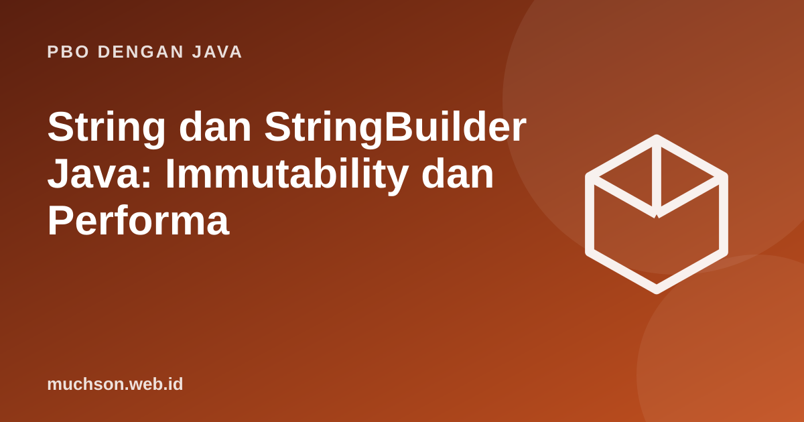

Beranda › Artikel › PBO dengan Java
PBO dengan JavaString dan StringBuilder Java: Immutability dan Performa
String adalah tipe yang paling sering dipakai dan paling sering disalahpahami. Mengerti bahwa String immutable menjelaskan tiga hal sekaligus: mengapa == berbahaya, mengapa menyambung di perulangan lambat, dan mengapa String aman sebagai kunci HashMap.
Sebaiknya sudah paham: tipe data, method

Tujuan belajar
Setelah membaca dan mencoba materi ini, Anda mampu:
- menjelaskan immutability dan string pool
- membedakan == dan equals pada String
- memakai metode String yang paling sering dipakai
- memilih StringBuilder untuk penyambungan berulang
- memakai format, text block, dan regex dasar
String itu immutable
public class Main {
public static void main(String[] args) {
String s = "java";
String t = s.toUpperCase(); // menghasilkan objek BARU
s.concat(" modern"); // hasilnya dibuang; s tidak berubah
System.out.println(s + " " + t);
String a = "halo";
String b = "halo"; // literal sama dibagi lewat string pool
String c = new String("halo"); // objek terpisah di heap
System.out.println((a == b) + " " + (a == c) + " " + a.equals(c) + " " + (a == c.intern()));
}
}java JAVA
true false true true
Metode yang sering dipakai
public class Main {
public static void main(String[] args) {
String s = " Belajar Java Itu Menyenangkan ";
System.out.println("[" + s.trim() + "] panjang=" + s.length());
String p = s.trim();
System.out.println(p.toLowerCase() + " | " + p.charAt(0) + " | " + p.indexOf("Java"));
System.out.println(p.substring(8, 12) + " | " + p.replace("Itu", "Sangat"));
System.out.println(p.contains("Java") + " " + p.startsWith("Bel") + " " + p.isBlank() + " " + "".isEmpty());
System.out.println(String.join("-", "2026", "10", "23"));
for (String kata : p.split("\\s+")) System.out.print("<" + kata + ">");
System.out.println();
System.out.println("abc".compareTo("abd") + " " + "Apel".equalsIgnoreCase("apel"));
System.out.println("ha".repeat(3) + " " + "madam".contentEquals(new StringBuilder("madam").reverse()));
}
}[Belajar Java Itu Menyenangkan] panjang=33
belajar java itu menyenangkan | B | 8
Java | Belajar Java Sangat Menyenangkan
true true false true
2026-10-23
<Belajar><Java><Itu><Menyenangkan>
-1 true
hahaha true
Menyambung di perulangan: StringBuilder
Setiap += pada String membuat objek baru dan menyalin seluruh isi lama, sehingga n penyambungan berbiaya O(n²). StringBuilder menyimpan buffer yang bisa diubah, jadi O(n).
public class Main {
static long ukur(Runnable r) {
long mulai = System.nanoTime();
r.run();
return (System.nanoTime() - mulai) / 1_000_000;
}
public static void main(String[] args) {
int n = 30_000;
long ms1 = ukur(() -> { String s = ""; for (int i = 0; i < n; i++) s += "x"; });
long ms2 = ukur(() -> { StringBuilder sb = new StringBuilder(); for (int i = 0; i < n; i++) sb.append("x"); sb.toString(); });
System.out.println("String += lebih lambat dari StringBuilder: " + (ms1 > ms2));
StringBuilder sb = new StringBuilder("Java");
sb.append(" 21").insert(0, ">> ").reverse().reverse().setCharAt(3, 'j');
System.out.println(sb + " panjang " + sb.length());
}
}String += lebih lambat dari StringBuilder: true
>> java 21 panjang 10
Catatan
Kompiler memang mengoptimalkan a + b + c dalam satu ekspresi, tetapi tidak dapat mengoptimalkan penyambungan yang tersebar di tiap iterasi perulangan. Di sanalah StringBuilder dibutuhkan.
Format dan text block
public class Main {
public static void main(String[] args) {
String nama = "Ani"; int umur = 20; double ipk = 3.756;
System.out.println(String.format("%s berumur %d tahun, IPK %.2f", nama, umur, ipk));
System.out.printf("|%-8s|%8s|%05d|%n", "kiri", "kanan", 42);
System.out.println("%s lulus dengan %.1f%%".formatted(nama, 95.5));
String json = """
{
"nama": "%s",
"umur": %d
}
""".formatted(nama, umur);
System.out.print(json);
}
}Ani berumur 20 tahun, IPK 3.76
|kiri | kanan|00042|
Ani lulus dengan 95.5%
{
"nama": "Ani",
"umur": 20
}Regular expression dasar
import java.util.regex.*;
public class Main {
public static void main(String[] args) {
String teks = "Hubungi kami: info@contoh.id atau admin@sekolah.sch.id, telp 0812-3456-7890.";
Pattern email = Pattern.compile("[\\w.]+@[\\w.]+\\.[a-z]{2,}");
Matcher m = email.matcher(teks);
while (m.find()) System.out.println("email: " + m.group());
System.out.println("0812-3456-7890".matches("\\d{4}-\\d{4}-\\d{4}"));
System.out.println("a1b22c333".replaceAll("\\d+", "#"));
}
}email: info@contoh.id
email: admin@sekolah.sch.id
true
a#b#c#
Latihan mandiriCoba kerjakan dulu sebelum membuka jawaban.
1. Tulis method yang memeriksa apakah sebuah String adalah palindrom (abaikan huruf besar-kecil).
Bandingkan dengan kebalikannya:
new StringBuilder(s).reverse().toString().equalsIgnoreCase(s)2. Hitung jumlah huruf vokal pada String.
Telusuri dengan charAt dan periksa dengan "aeiou".indexOf(c) >= 0 setelah lowercase.
3. Mengapa StringBuffer ada selain StringBuilder?
StringBuffer tersinkronisasi (aman thread) tetapi lebih lambat; StringBuilder adalah pilihan umum untuk satu thread.
4. Format angka 1234567.891 dengan dua desimal.
String.format("%,.2f", 1234567.891) (pemisah ribuan tergantung locale).Ringkasan
- String immutable; operasi menghasilkan objek baru.
- Bandingkan isi dengan equals, bukan ==.
- StringBuilder untuk penyambungan berulang.
- format, text block, dan regex melengkapi pemrosesan teks.
Tanya jawab
Apa itu string pool?
Area memori tempat JVM menyimpan literal String unik agar dapat dibagi, menghemat memori.
Mengapa String aman sebagai kunci HashMap?
Karena immutable, hashCode-nya tidak berubah.
Apakah char dan String bisa dibandingkan dengan ==?
char (primitif) bisa dengan ==; String harus dengan equals.
Referensi
- Oracle: Strings (Java Tutorials)
- Java SE API: String
- Oracle: Regular Expressions
- Joshua Bloch, Effective Java (edisi ke-3, Addison-Wesley, 2018)